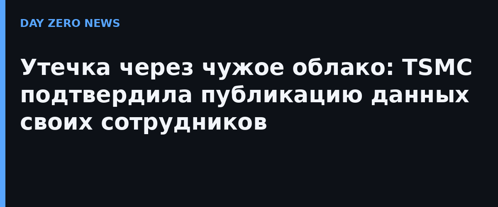

12 ноября TSMC подала в Комиссию по ценным бумагам США (SEC) заявление, в котором признала: часть данных действующих и бывших сотрудников «была без разрешения опубликована на внешнем сайте». Компания проверила утечку и установила, что файлы совпадают с данными, хранившимися «в системных сервисах облачного провайдера». Дословно: «На данный момент мы не нашли свидетельств того, что системы TSMC были скомпрометированы». На этом же компания построила план ответа: уведомляет пострадавших, оказывает им поддержку и привлекла стороннюю киберфирму для разбора инцидента.
Цифры ниже — заявления самого злоумышленника, TSMC их официально не подтверждала. 8 ноября пользователь с ником SmithBianl выложил на хакерском форуме файл с 499 строками как «пробник» датасета объёмом 6,9 ГБ, где якобы лежат 46 тысяч записей сотрудников: идентификационные номера, адреса, контакты и банковские реквизиты. Торги стартовали с 3 BTC (около 65 тысяч долларов), а первый дедлайн — 15 ноября: если покупателя не найдётся, датасет обещают выложить бесплатно. На вопрос журналистов о планах платить вымогателям пресс-служба TSMC отвечать отказалась.
Классический сюжет 2026 года: компания держит оборону, не взломана, отчитывается регулятору — и всё равно утекает через плечо подрядчика. Кадровые данные (а тем более банковские реквизиты сотрудников) живут в чужих облачных сервисах, где безопасность уже не зависит от собственной ИБ-команды. Для отрасли это чувствительнее обычного: TSMC делает чипы для Apple и Nvidia, проштучевала 15 миллионов 12-дюймовых пластин за год и принесла 122,4 миллиарда долларов выручки — а её людей увели через сервис, который для атакующего был привычнее, чем бронированные производственные сети.
Если ваши HR-данные, расчётные ведомости и реквизиты живут у внешнего облачного или HR-провайдера — это тот самый периметр, который надо инвентаризовать первым: какие данные, у кого, с какими правами доступа и шифрованием. Проверьте договоры на обязанность провайдера уведомлять об утечках и на ваши права по аудиту. Сотрудникам TSMC остаётся ждать уведомления компании и пользоваться предложенной поддержкой; остальным — напоминание: «мы не взламывались» больше не гарантия, что ваши данные не утекли.
*(Оценки объёма и состава утечки — заявления злоумышленника; официальные факты — из уведомления TSMC в SEC.)*